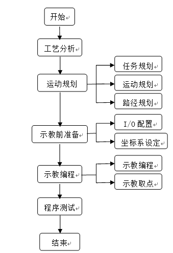

2.2 搬运编程与操作
2.2.3工业机器人工作流程
使用工业机器人完成搬运工作，要经过5个主要工作环节，包括工艺分析、运动规划、示教前的准备、示教编程、程序测试。
编程前需要先进行运动规划，运动规划是分层次的，先从高层的任务规划，动作规划再到手部的轨迹规划，最后是工具的位姿规划。首先把任务分解为一系列子任务，这一层次的规划称为任务规划。然后再将每一个字任务分解为一系列动作，这一层次的规划称为动作规划。为了实现每一个动作，还需要对手部的运动轨迹进行必要的规划，这就是手部的路径规划以及关节空间的轨迹规划。
示教前需要调试工具，并根据所需要的控制信号配置I/O接口信号，设定工具和工件坐标系。在编程时，使用示教器编制程序同时示教目标点。程序编好后，进行测试，根据实际需要增加一些中间点。

图2-18 工业机器人工作流程图